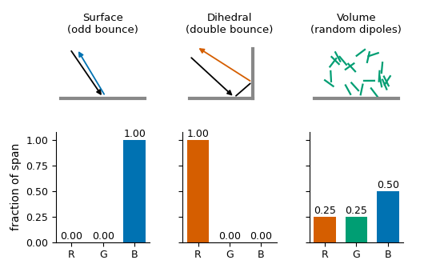

| SAR Concepts: Polarimetry Primer | |
A polarimetric SAR transmits and receives in two orthogonal polarisations and records how each target changes the polarisation of the wave. That change identifies the scattering mechanism (surface, double bounce or volume), which a single intensity image cannot do. Every polarimetric operator in SNAP works on the scattering, covariance and coherency matrices described here.
For one resolution cell, a fully polarimetric (quad-pol) radar measures four complex numbers. They form the Sinclair scattering matrix:
S = [ SHH SHV ; SVH SVV ]
H and V are the horizontal and vertical linear polarisations. SHH and SVV are the co-polarised elements, SHV and SVH the cross-polarised ones. Each element has an amplitude and a phase, so only complex (SLC) data carry the full information.
Reciprocity. When the same antenna transmits and receives (monostatic SAR), the two cross-polar elements are equal: SHV = SVH. The matrix then has three independent complex elements. Faraday rotation in the ionosphere breaks this equality at L- and P-band, which is why it is corrected before any matrix is formed.
Span. The total power is the same in any polarisation basis:
Span = |SHH|2 + |SHV|2 + |SVH|2 + |SVV|2
The matrix is rearranged into a vector. Under reciprocity there are two standard choices:
kL = [ SHH, √2 SHV, SVV ]T
kP = (1/√2) [ SHH + SVV, SHH − SVV, 2 SHV ]T
The factors √2 keep |k|2 equal to the span. Both vectors carry the same information and are related by a fixed unitary transform. The Pauli vector kP is easier to interpret, because each element matches one ideal scatterer:
Natural surfaces and vegetation are distributed targets. Each pixel is the sum of many random contributions, so S of a single pixel is speckle, not a property of the target. The stable quantities are the second-order averages:
C3 = < kL kLH >
T3 = < kP kPH >
Here H is the conjugate transpose and < > is the average over looks or a moving window. C3 is the covariance matrix and T3 the coherency matrix. Both are 3×3, Hermitian and positive semi-definite, with 9 real parameters, and their trace is the span. They hold the same information, and SNAP converts between them exactly. A matrix built from one pixel without averaging has rank 1; it describes one deterministic scatterer and gives an entropy of zero. Averaging and its statistics are explained on Polarimetric Speckle, Wishart Statistics and Classification.
| Matrix | Vector | Size | Typical use |
|---|---|---|---|
| C3 / T3 | kL / kP (reciprocal) | 3×3 | Quad-pol decompositions, classification, speckle filtering |
| C4 / T4 | 4 elements, SHV and SVH kept separate | 4×4 | Data where reciprocity has not been imposed |
| C2 | [Sco, Scross] or the two compact-pol channels | 2×2 | Dual-pol and compact-pol products |
Many missions record only two channels. A dual-pol product (VV+VH or HH+HV) gives one co-polar and one cross-polar channel and the 2×2 matrix C2 = < k kH > with k = [SVV, SVH]T (or [SHH, SHV]T). The phase between the two co-polar channels, which separates surface from double bounce, is missing. Compact polarimetry transmits a circular wave and receives H and V coherently. It also gives a C2, but one that keeps part of the co-polar information. See Dual-pol and Compact Polarimetry.
| Mission | Band | Polarimetric modes |
|---|---|---|
| Sentinel-1 | C | Single or dual-pol (VV+VH or HH+HV); no quad-pol |
| RADARSAT-2 | C | Quad-pol, dual-pol |
| RADARSAT Constellation Mission (RCM) | C | Dual-pol, compact-pol; one quad-pol mode |
| ALOS-2 PALSAR-2 | L | Quad-pol, dual-pol |
| BIOMASS | P | Quad-pol |
Many natural media are statistically symmetric about the plane of incidence. For them the co-polar and cross-polar channels are uncorrelated: <SHH SHV*> = <SVV SHV*> = 0, so four real elements of C3 (and of T3) vanish. This reflection symmetry is assumed by the Freeman-Durden and van Zyl decompositions. Terrain slopes in azimuth and buildings that are not parallel to the flight track rotate the scattering matrix about the line of sight and break the symmetry. Quantities that do not change under this rotation, such as the span, the eigenvalues of T3 and the entropy and alpha angle derived from them, are called roll-invariant. See Polarimetric Decompositions.
The Pauli RGB composite displays the diagonal of T3:

Figure 1. Ideal scatterers and their Pauli signatures, as a fraction of the span. A surface or trihedral puts all its power in blue, a dihedral aligned with the track all in red. A cloud of randomly oriented thin dipoles (T3 = diag(2, 1, 1)/4) puts half in blue and a quarter each in red and green. Forests still look green in a Pauli RGB because each channel is contrast-stretched separately and the cross-polar (green) power is much higher over forest than over other land cover, not because green carries most of the power.
Real pixels mix mechanisms, so the colour shows only the dominant one. A rough Bragg surface, where |SVV| > |SHH|, adds a little red to blue; a rotated building can appear green.
i_HH, q_HH, i_HV, q_HV, i_VH,
q_VH, i_VV and q_VV. Calibrate them with complex output
first (Calibration, option Save in complex).Polarimetric-Matrices) builds
C2, C3, C4, T3 (default) or T4. It
needs an SLC input. C2 needs a dual-pol (HH+HV, VV+VH, HH+VV) or compact-pol product; a quad-pol
product must first be reduced to two polarisations with Band Select.T11,
T22, T33). Off-diagonal elements are stored as real and imaginary parts:
T12_real, T12_imag, T13_real, T13_imag,
T23_real, T23_imag; likewise C11 ... C33 and the
4×4 forms up to C44 / T44. C2 has C11,
C12_real, C12_imag, C22. For VV+VH, C11 is the
VV power and C22 the VH power; for HH+HV, HH and HV.Pauli_r, Pauli_g and Pauli_b in dB, pixel by pixel without a
window. For C3 or T3 input it uses T22, T33 and T11.